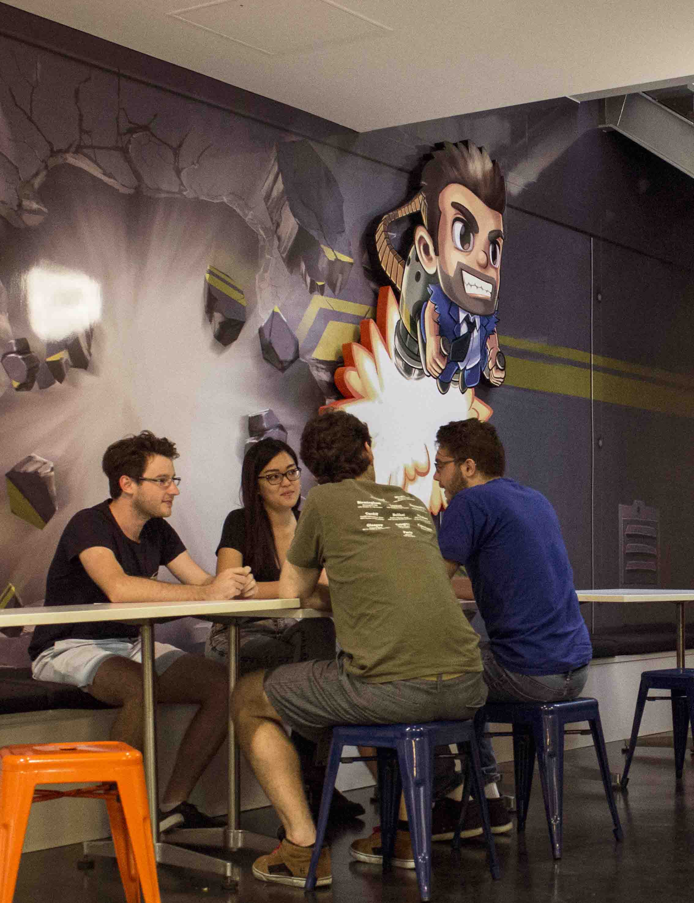
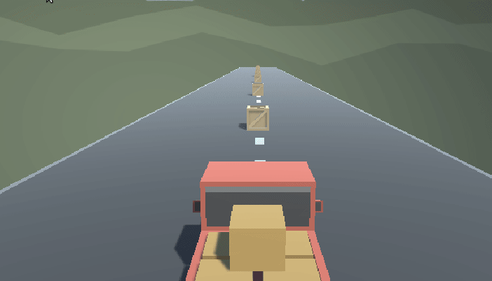

Post a brief introduction about yourself and what you hope to gain out of the subject.
Hi, I’m Anunda, an aspiring game developer / software engineer and a maker of things. I appreciate simple stuff and sometimes complex gadgetry (when they work well).
In the past I have made many small illustrations, I have dabbled in 3D printing, 3D modeling, programming and content creation (see example below):
Figure 1
When exploring YOUTUBE, I decided to try upload the above video to test how YOUTUBE uploading works.
I think I am capable with SVG and “OK” at Pixel art When I was little I used to draw wild eyed creatures
Now I many draw scribbles and have a hard time sticking with a drawing to the point of a work that interests me.
In this subject I plan to pull in my vast and polka dotted knowledge on programming and incorporate my Illustration and design skills while learning to make something cool.
I’m looking forward to making many more gadgets, designs and illustrations.
Post up the previous knowledge that you have gained that will assist in this unit.
Pls Ramble on… Previous knowledge that I have gained that I feel will help me in this unit include The Cert III in Information Digital Media & Technology that I took at Townsville tafe in which I worked with computers. Installing operating systems and managing a simple network of ~3 virtual machines.
During highschool as part of a yr.12 for the Design and Technology project I worked with multiple 3d printers and in multiple makerspaces, namely the Hackerspace in Kuranda which is now closed, a makerspace in sydney and a makerspace at a student study building in Brisbane. Even before this project I had an interest in 3d printers and fabrication, the experience of working with these machines and in these coworking spaces.
As part of Visual Design in highschool I worked with photoshop and similar software, learning about white space and other design elements. I think this relates to my creative practice as a game developer, as appeal in games are very dependent on their visual and interactive design elements.
Maths Physics I also did maths and physics in highschool
Experiences
Mindstorm classes with CSIRO
I’ve been involved with various maker spaces alone the East Coast of Australia
I’ve traveled extensively throughout Australia and have had journeyed around the world. Previously visiting 11 different countries.
T1E3: Australian Game Industry
skrshe (Anunda. J. Green)
Discuss your experience with the Australian Games Industry.
Games I know of made in Australia are Jetpack Joyride Hollow Knight Antichamber
Report My experience with the Australian Games Industry only really pertains to Halfbrick’s ‘Jetpack Joyride’ and ‘Fruit Ninja’. I’ve only recently played a game developed inside of this great southern land and that is ‘Hollow Knight’ developed by Team Cherry, which is a true joy to play.
Relate Australia’s games industry is made up of dozens of small studios, concentrated primarily in Victoria. The Interactive Games & Entertainment Association IGEA (Sydney Morning Herald) February 2, 2021)
Reason
Reconstruct
 Figure 1: Halfbrick Studio
Figure 2: ‘Hollow Knight’ by Team Cherry
Bibliography: Figure 1: Halfbrick (n.d.) About us. Accessed on the 20th of May 2021, from https://www.halfbrick.com/about-us
Figure 2: Team Cherry (n.d.) Hollow Knight voidheart edition out now. Accessed on th 20th of May 2021, from https://www.teamcherry.com.au/blog/a-hrefhttpteamcherrycomauvoidheart-edition-out-now-titlelink-to-hollow-knight-voidheart-edition-out-nowhollow-knight-voidheart-edition-out-now
Sydney Morning Herald (February 2, 2021) Australian video games could be a billion dollar industry if given support. Accessed on the 20th of May 2021, from https://www.google.com.au/amp/s/amp.smh.com.au/technology/video-games/australian-video-games-could-be-billion-dollar-industry-if-given-support-peak-body-20210129-p56xu3.html
T2E1: Driving Sim Prototype
skrshe (Anunda. J. Green)
Sun May 16 2021
Post a GIF of your completed Driving Sim prototype and reflect on your overall experience developing the prototype.
driving_prototype
While developing the driving sim I learned … Some issues I faced were - gravity / unity physics - linux dificulties (current versions of unity are designed to run on desktop environments which I am not running)
My overall experience developing the prototype was …
T2E2: Indie Game Research
skrshe (Anunda. J. Green)
Sun May 16 2021
Post an annotated bibliography of your research surrounding an Australian
Antichamber by Demruth
T2E3: Problem Solving
skrshe (Anunda. J. Green)
Reflect on a complex problem you have solved. Make sure to list the Initial State, the Operators, and the Goal State.
while trying to get the unity-2020.2.2f version for linux from the unity download archive the link wasn’t opening UnityHub
I fixed this by running unityhub from the commandline with the archive link I copied from the Unity archive:
$ unityhub unityhub://2020.2.2f1/068178b99f32
later I found out that I needed a package called xdg-utils for my version of linux to open specific urls in exteral applications
this problem occured because the computer I work on is running archlinux which is known to be built the ground up and uses the KISS philosophy (Keep It Simple Silly) to maintain a clean developement environment for more technical computer users.
T3E1: Vertical Shooter Progress
skrshe (Anunda. J. Green)
Post a GIF of your progression developing the Vertical Shooter prototype and reflect on your experience so far.
T3E2: Presentation
skrshe (Anunda. J. Green)
Reflect on the start of your presentation and any additional question that may not have been listed in the assignment outline.
T3E3: Journal Layout Check
skrshe (Anunda. J. Green)
Reflect on your journal layout and how much work you had to do to update it to meet the standards outlined in the Mahara Training